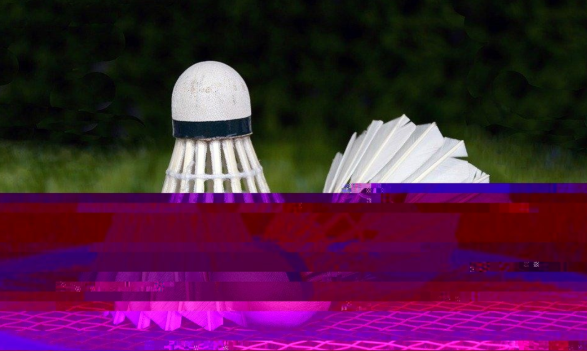

These were made in Art 74. The goal for this assignment was to make a photo you found online to have the glitch effect. I think that it was pretty sucessful. We learned that behind each photo that was posted, it has data of the image online. We took 2 images and edit the photo to have the glitch effect on Notebook (for mac) or Notebook++ (for windows). I decided to go with an image of badminton birdies and one of the images has a badminton racket wiith the birdie sitiing on top of the racket. Once I had the iamges, I put the image on Notebook++ and the image data showed. From there, I started to mess it around by deleting some data off from the imagine and added random words and letters to see if the image has changed. As you can tell, both of the images has the effect but not the entire image. I have done this purposely because I want to being out the idea that although playing badminton is really fun, plaing competetively phyically and mentally drains you (at least it did for me). This comes to shows that playing this sport competetively isnt just about the matches you see on tv, but all of the hours you don't see behind a competive player.
Email:shirley.yee@sjsu.edu
Instagram: @w1nt3r_drawings